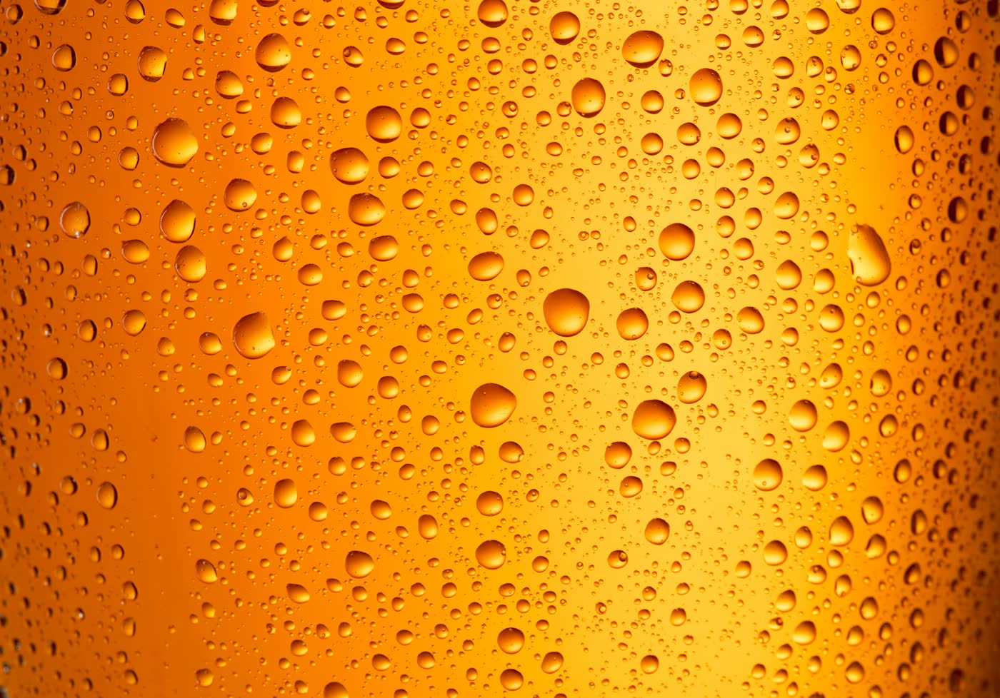

Frecuencia recomendada
Para locales con consumo moderado recomendamos revisar cada 4 a 6 semanas. En eventos, terrazas con calor o picos de ocupacion, la limpieza debe programarse antes de que aparezcan fallos.
Servicio local en Tenerife Sur
Servicio para líneas de cerveza, grifos, conexiones y equipos de hostelería en San Miguel de Abona y Tenerife Sur.
Solicitar presupuestoTrabajamos con bares, restaurantes, hoteles, beach clubs y eventos. Revisamos la instalación, limpiamos las líneas y los grifos y explicamos qué necesita seguimiento.

San Miguel de Abona combina restaurantes, hoteles, golf, zonas residenciales y negocios con distintos ritmos de consumo. Esa variedad exige revisar la instalacion segun uso real, no con una pauta generica.
Para locales con consumo moderado recomendamos revisar cada 4 a 6 semanas. En eventos, terrazas con calor o picos de ocupacion, la limpieza debe programarse antes de que aparezcan fallos.
El servicio incluye limpieza de lineas, revision de grifos, cabezales, juntas, presion y puntos donde el calor o la baja rotacion afectan la cerveza.
Una instalacion sin seguimiento genera espuma, sabor irregular, barriles mal aprovechados y averias que suelen aparecer en pleno servicio.
Este servicio esta pensado para restaurantes, hoteles, bares de golf, locales de urbanizacion y negocios de hosteleria en San Miguel. La revision se adapta al numero de lineas, marcas conectadas, volumen de barriles y condiciones de temperatura del local.
Para locales con consumo moderado recomendamos revisar cada 4 a 6 semanas. En eventos, terrazas con calor o picos de ocupacion, la limpieza debe programarse antes de que aparezcan fallos.
El servicio incluye limpieza de lineas, revision de grifos, cabezales, juntas, presion y puntos donde el calor o la baja rotacion afectan la cerveza.
Una instalacion sin seguimiento genera espuma, sabor irregular, barriles mal aprovechados y averias que suelen aparecer en pleno servicio.
La limpieza de líneas empieza desde €45 para 1–2 líneas. El mantenimiento completo empieza desde €55. El desplazamiento dentro de Tenerife Sur está incluido según las condiciones del servicio.
Ver todas las tarifas